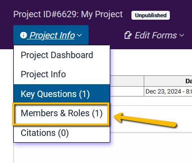

2 Setting Up Your Project
There are three things you need to do to set up your project in SRDR.
- Create the project and enter basic project information
- Create your key questions
- Enter the project members
2.1 Creating Your Project
After registering for an VADRR account, you’ll be sent an email confirmation. Once you’ve confirmed your registration and logged in, you’ll be taken to your Projects page. You won’t see any projects listed just yet. So, you’ll need to create your first project. To do this, just click on the Create Project button.

Next, you’ll be prompted to give your new project a name and (if you want) a brief description. Then, just click the Submit button to create the project.
Note that the pulldown at just above the Submit button is populated with the default “Create an empty project.” However, evidence extractions created from other platforms (e.g., Distiller SR) can be archived in VADRR. The pulldown allows users to archive these projects.

If you are creating a new project, you will not need to worry about using this.
Once you click the Submit button, you will then be taken to a page where you can add details for your project.

2.2 Enter Your Key Questions
Next, you will want to set up the key questions for the project. Click on the Key Questions option under the Project Info tab.

This will take you to the page to set up the Key Questions (e.g., PICO questions) for your project.

Once you have entered your Key Questions, you’ll have the option to begin building out your data extraction form. You’ll find this button at the bottom right of the Key Questions page.

But, before you begin creating your data extraction template, you may want to add additional members to your team. You can always add team members later, but while we are on the setup, let’s go ahead and see how to add members and set their project roles.
2.3 Enter Project Members and Set Their Roles
Just as with the Project Information and the Key Questions, you’ll find the Members and Roles link at the top of the page under Project Info tab.

When you open the Members & Roles page, you will see the following.

We will walk through these options now.
First, you will need to enter the new team member’s ID (which will be the email they used to registered for VADRR) to the project. Once someone registers for VADRR, their email becomes their ID.

Second, you’ll define the new team member’s role. Each role has the ability to do different things in the project.
Consolidators: These are members whose primary job is to serve as a referee between duplicate (or triplicate, etc.) extractions. For instance, if articles for your project will be double extracted (i.e., have two people extracting the same article for quality assurance purposes), then the Consolidator is the person who will adjudicate between extractions when there is disagreement between extractors. Often, you want a third person not involved in the initial data extractions to serve as a quality check.
Contributors: These members are the data extractors for the project. They can also serve as screeners for the project.
Auditors: These are individuals who cannot make changes to the project, but who can view the project (e.g., as an additional quality assurance step).
Experts: In the screening tool (see VADRR 4.0.1 Screening Tool Resources for Team Leaders), you have the ability to differentiate topical experts from novices. Identifying topical experts can ensure that no article is screened without at least one expert viewing the article.
Here is a full description of the different things the different roles can do.

Finally, once you’ve set the member’s role, just click Save Changes.
Note, if you ever need to add a new member to the project, you can always add them by clicking on the Project Details tab again and selecting the Members & Roles link. You can also add/modify Keywords and Project Information at any time as well.